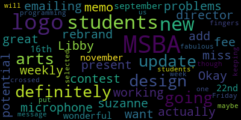
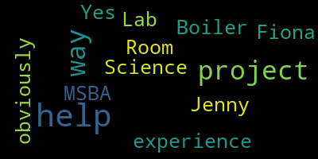
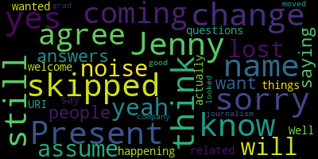

AI-generated transcript of MSBA Full and CE SubCommittee Meeting
English | español | português | 中国人 | kreyol ayisyen | tiếng việt | ខ្មែរ | русский | عربي | 한국인
Back to all transcripts
[Larry Brown]: Go on.
[Graham]: just give everyone another minute and then we'll get started. start reading the agenda so we can get off to the races here since we're running a little behind. Please be advised that on September 18th at 6 p.m. there will be a Medford Comprehensive High School Billing Committee. via remote participation using the link provided below. The meeting can be viewed on Medford Public Schools' YouTube channel and through Medford Community Media on your local cable channel, Comcast 9, 8, or 22, and Verizon channel 43, 45, or 47. The meeting will be recorded. Participants can log in by using the following information. The meeting ID is 952-4299-2411. I'm gonna call the roll. so that we can have hopefully a quick meeting here and give you some updates. Let's see. Jenny Graham, here. Mayor Lungo-Koehn. Present. Dr. Maurice Edward Benson. Here. Dr. Cushing.
[Cushing]: Present.
[Graham]: Dr. Galusi, she's absent. Marta Cabral, she's absent. Libby Brown. I see Libby.
[Keene]: She appears to be unmuted too.
[Graham]: Yes. Marissa Desmond. Maria Dorsey. Brian Hilliard. Tracy Keene.
[Keene]: Present here.
[Graham]: Emily Lazzaro. Here. Nicole Morell. Aaron Olpade.
[Olapade]: Here.
[Preisner]: Luke Chrysler. I'm present and John may be joining us too. He didn't have the updated meeting info either.
[Edouard-Vincent]: Libby's having microphone problems, but she is present. Okay, great.
[Graham]: Larry Brown.
[Larry Brown]: Here.
[Graham]: Bob Dickinson. Fiona Maxwell, Joan Bowen, Tom Dalton, Chad Fallon.
[Cushing]: Here.
[Graham]: Hi, Chad. Lori Hodgson. Here. John McLaughlin. Paul Rousseau. Here. Philip Santos. I'll see him. Okay. We have 1, 2, 3, 4, 5, 6, 7, 8, 9, 10, 11 present for absence. So we do have a quorum. So we're good to go. Thank you all for hopping on. I do think this will be a very brief meeting, but I did want to give you a number of updates just in terms of where we are in the process and what we have ahead of us. So we'll do that in just a minute. We do have a consent agenda to approve the meeting minutes from the 7-17 full committee meeting. Is there a motion to approve the minutes?
[Keene]: So moved.
[Graham]: And is there a second?
[Olapade]: Second.
[Graham]: Okay, so motion by Tracy Keene, two of the minutes, with a second by Aaron Olapade. Roll call. Jenny Graham, yes. Mayor Lungo-Koehn? Yes. Dr. Edward Vincent? Yes. Dr. Cushing?
[McLaughlin]: Yes.
[Graham]: Dr. Galusi, absent. Marta Cabral, absent. Libby Brown?
[Libby Brown]: Still trying, but you can't hear me.
[Graham]: Yeah, we can hear you. Oh, you can. Great. Yes. Marissa Desmond, absent. Maria Dorsey, absent. Brian Hilliard, absent. Tracy Keene.
[Keene]: Yes.
[Graham]: Emily Lazzaro. Yes. Nicole Morell.
[Olapade]: Yes.
[Graham]: Aaron Olapade.
[Olapade]: Yes.
[Graham]: And Luke Preissner. 11 in the affirmative, zero in the negative, four absent. The minutes are approved. Okay, so flipping back to our agenda, I just wanted to give you all a couple of updates, and then we have really one topic to discuss. So as you know, when we met back even in July, we talked about... that all of our documentation had been submitted and that we were awaiting information from the MSBA about the enrollment study. So we have, since that time, we have met with the MSBA about our enrollment projections. So if you all recall, That is a critical step in this eligibility phase because what the design enrollment is certified at that we will ultimately agree to with MSBA is how we will go forward to size the building. So in terms of any project that comes next, right? So that we all have to agree on like how many students are we trying to accommodate for? We provided a whole bunch of information to them about Medford's housing market. about our historical enrollment, among other things. And we did hold an enrollment meeting with them. They presented us their preliminary numbers and they had a series of really good questions for us about what may not have like, I'll say like, come through in answering the questions that they standardly pose. So we had a really good conversation about some of the additional factors from Medford's perspective. The mayor is part of the Metro Planning Council, and they are committed to helping the governor achieve their goals. We have an aggressive housing production plan, those kinds of things. So we were able to have some good conversation about a whole variety of topics that impact enrollment. At the end of the conversation, they asked us for some more information. So we actually did provide that to them in mid-August. And we are awaiting feedback from them about the next step. So more to come on getting through this last piece of the eligibility phase as we hear from them. What we have done in the meantime is thanks to the help of Will Pipicelli, who's on the call, he is replacing Tom Dalton on the committee as soon as the school committee votes that change through officially, but he's here tonight. He's joined us. He's our director of communications for the district. So I wanted to welcome him to the team unofficially and we'll welcome him officially once the committee... goes through that process. But Will and I have been working on two efforts. One is to take all the documentation that we had to submit to MSBA around this enrollment study and put it into a digestible format. The other was to do the same with all the maintenance and capital planning information that we had to submit because all of those submissions go into their computer system and they don't spit out all that great or with like enough context that it would sort of resonate for us to post that on our website. So I believe that you all received both of those documents before the meeting. That's really just more for you to have. We would obviously, we do plan to post those on the website so that everybody can see them. But those two documents are hot off the presses. Will and I were working on finalizing them today. Many, many thanks to Will for his work on that. Pulling together all of the information was not an easy task. There's lots of attachments. The enrollment projection information is particularly sort of tedious to... to get through and understand. So thank you for that, Will. And I want to make sure that you all saw those attachments from Lisa just a little bit ago. So take a look. We will post them on the website. I will plan to share them out on social media. And Will and I will talk about a plan to do that from the school account instead of from my personal account so that there can be record of that. So I wanted to provide that update. So we're still very much in wait mode. And we are waiting on those next steps from the MSBA and just ready and willing when they have questions. So I am planning to touch base with our contact there later this week. And I will let you know if there's anything material that sort of comes next. Also, in terms of the timeline, Um, I'm not a hundred percent clear when we will sort of exit this phase because we are sort of at, we're at the end, but we're not done. So I think some of that will drive, um, the board meeting, um, placement wherever we, um, wherever we land, once we get through this process. Um, the other, uh, part of the timeline is I haven't scheduled any meetings because I don't want to take up your valuable time. Um, until we have better clarity on those next steps. We will talk a little bit about sort of getting ready for the next phase in just a minute, but we are going to try to use this time to provide some opportunities for folks to go tour other buildings. We do have a tour of Arlington High School on the books for next week. You're all welcome to join us. It's at three o'clock on the 24th. The Arlington Project is... probably even more open now than it was when I went to tour the building back in like May or June because it is a phased renovation. We are also working on plans to talk to Waltham, Somerville, Stoneham, and Bill Ricka. So more to come as we get those dates on the calendar and Lisa will push out invitations to you all to join us as you are able. So we're sort of taking this time where we have some quiet time to also take some tours and get inspired. So that's on the immediate agenda and we'll work through getting those on the books and then we can regroup if there's anywhere else that we want to take a look at. Questions about the timeline? Okay, so the other major part of our agenda today is that as we start sort of looking forward to that next phase, our next, assuming that we are invited to the next phase, which is part of this MSBA process, the next phase really would be for us to... put out a public procurement and onboard our owner's project manager who will help lead this project forward as it gets increasingly technical. So in order to do that under MSBA's guidelines, what we need to do is form an OPM selection committee that will help sort of get that procurement in place and out the door and shepherd that through the selection process. There are certain people that have to be on the committee. Fiona is one of them. I believe Bob Dickinson is another. I think he has to be on the committee. But I did want to talk about that among this group because there is also a gate that the school committee will need to approve whoever that selection committee is. So even though they're a subcommittee of our committee, according to MSBA, the school committee needs to sign off. So I wanted to open that up for a little bit of discussion about the sort of our best next steps. Do we want to nominate folks tonight so that I can sort of be ready to feed that to the school committee when appropriate? Or do we want to do that at a later meeting? I'm open to both options, but I know the school committee agenda can be sort of big and packed at times. So advanced notice would be helpful because then I have a little bit of runway to figure out how to get it on the agenda. But that team, I believe, can start meeting to start to do the documentation work to put the procurement documents in place. So I do think if we sort of have that committee at the ready, they can be moving along because. the ultimate goal of this next phase is to get the OPM on board and then ultimately the designer or the architect, but the OPM comes first. So we have to do the OPM and then the architect, and then we can get to ultimately the feasibility study. So I'll stop there. If anyone has any comments, questions, thoughts, I'm happy to take them.
[Fallon]: Jenny, can I just say two things?
[Graham]: Sure.
[Fallon]: So first, I was just called to a meeting yesterday via Zoom for Everett. What I don't think we knew, or maybe you all knew and I didn't, Everett is looking to build a new school and enhance their vocational programming. So remember before when we didn't really look in our range because nobody was a competing factor? Not that this is competing, but they're opening similar programs. So I think we're on the same timeline as them. Did you know that?
[Graham]: Yes.
[Fallon]: Yeah, okay.
[Graham]: Yeah, they were invited at the same meeting we were.
[Fallon]: Okay. So the second thing was anytime we can tour Somerville or Waltham will be amazing because that's really the vision of our blended school. So that's all. Waltham, beautiful. When I drive by it, it's incredible.
[Graham]: Except those bleachers. But yeah, if you all haven't seen the news articles, there's an issue in their gymnasium of the newly opened school where their bleachers are too big for the school. gym itself and so they the bleachers come out onto the playing floor um so now that i've said that it'll be in your social media feed and you can take a look at the article but um yeah so we we are trying to um to get to to waltham um in particular i know that they just opened so they will it'll be a different aspect of like sort of their reactions to that building for sure
[Keene]: Jenny, in reference to this committee, I want to say what demographics of this committee do you want represented on that in terms of how you see expertise that we could bring to the committee and what is the time commitment?
[Graham]: So part of the work of that committee is going to be to sort of follow the template set out by MSBA around the procurements and make sure that we're in good position to be in compliance with all of Medford's procurement. So I think, you know... if you have procurement experience, that's a plus, because that is fundamentally what we're doing. If you have experience working with OPMs, I think that is also a plus. And, you know, bringing that group together, the other thing that group will do is figure out, like, what is the process that we're going to go through to actually select the OPM? And I would imagine that this larger group will certainly be invited to the table to listen to presentations and things like that. But ultimately, the recommendation and the selection of the OPM is going to have to sort of go through the selection committee and then to us. So I think time-wise, it's going to happen in like... sort of bursts, and I can't really even tell you when the bursts will happen. Certainly, there's some upfront work to get those ARFPs out. Once they're out, there's sort of a quiet period, right, where we have to answer some questions, and then we really can't talk about the bid. And then once everything comes in, we'll have to have an established timeline to work through all of those submissions, do interviews, and ultimately make a selection. So whenever that happens, it's going to be the most time intensive space. Some of that will be a function of how many OPMs bid. So it's really hard to know, but doing bid reviews can be really, really time consuming. I do think there's a decent amount of work there for the team.
[Preisner]: I want to ask about the OPM. So you mentioned the OPM. Normally, there's three agents involved in these construction projects. Aside from the OPM, there's an architect, there's a construction manager. We picked the OPM first. Fine. Does the OPM have a role in... selecting or influencing the other two, or is it a forced marriage? If you look at press articles and just kind of look at all the other projects in the region, it becomes clear that there's a handful, probably somewhere between a half dozen and a dozen companies that do this, and they typically swap hats depending on which project they're working on. And so is it a forced marriage or does the OPM have a role in guiding their preferred construction manager partner as well as their preferred architect?
[Graham]: So there's a couple questions there. One is not all people play all roles. Not all organizations do all the roles. Some do. So some are architects and OPMs. Some are just architects. Some are just OPMs. And any version of that could... be what we see in terms of our bid. The OPM is going to help us do the heavy lifting to get the designer and the construction manager on board. So this work of getting the OPM on board is our work to do. Once we do that, we now have somebody like paid staff that's going to help shepherd the rest of that along. They certainly are going to have a wealth of information about who does this work. who they've worked with before. But ultimately, this committee is going to make those selections. So no, there is no such thing as a forced marriage. Who we hire to be the architect, who we hire to be the construction manager is up to this committee. But the OPM, you know, ideally is the person who can help guide this committee and do the heavy lifting for us once we have them on board. But it is really important to pick an OPM that sort of reflects what we want to see as we go forward. So, you know, finding the OPM that's a good fit for us is really, really important. Any other questions?
[Lungo-Koehn]: Chair Graham, could you just tell me the timeframe that we would be putting out an RFP? Or would we want to put out an RFP?
[Graham]: I don't know. I mean, I think as soon as we are invited to the next phase, I would like our RFP to be out the door within 30 days max, because the sooner we do that, the sooner we have somebody on board and the sooner those next phases can happen, which is why I would like to get the procurement documents created in advance of that. But it's really hard to say because it will be driven by when MSBA invites us to the board meeting to advance us to the next round. So those options, they meet every other month. They do not meet in September. So they meet in October, they meet in December and they meet in February. If I had to guess, like where I think we're likely to be at the December board meeting, there's maybe an outside chance we'll make it to October, but we're not slated. We were not originally slated to go to a board meeting until I think February.
[Lungo-Koehn]: Okay, and I'm sorry if I missed it. Can we set up, can we let you know who on this committee is interested in being on that procurement team and form that procurement team prior to the board meeting?
[Graham]: Yeah, I mean, I think we can have that conversation and decide who those folks are. It has to go to the school committee for approval. And I don't believe there's any reason why we can't begin work, but I will confirm that with MSBA. So I think if there are people who want to be part of this process, those nominations tonight would be helpful.
[Preisner]: Luke? Okay. Thank you. Yeah, follow-up question to the earlier. So in terms of next step, feasibility is the next phase in this long-chain process. And do we need to have all of the agents, OKM, architect, construction manager named in order... begin a feasibility study or can we proceed with a feasibility study with just the OPM?
[Graham]: The next phase is forming the team, which includes the OPM and the architect. Then the feasibility study happens. So the two things that must happen are we must have an OPM and we must have an architect. And then we get invited to feasibility. The construction manager comes later. But we so we have to get the OPM on board. They will help us get the designer on board and then we will be ready for feasibility. So there's actually several there's a couple of MSBA gates there in the middle. Because they they do have to approve our OPM, they have to approve our designer. There's a lot of approvals that they have to do along the way. I do believe that Fiona has to be on the team and I believe Bob does, but they are both non-voting members of this committee. So there need to be at least three voting members of the committee on this subcommittee as well. So I certainly will be on the committee, but I would love other folks to join us as well.
[Libby Brown]: Having worked for many OPMs, please excuse my voice tonight. I would be happy to be on the committee.
[Graham]: Thanks, Libby. Is there anybody else that's dying to be on the committee? And that goes for non-voting members as well. You're very welcome to be on the committee. We just need to make sure we have enough voting members that it can be a legitimate committee to.
[Larry Brown]: I would, but I don't have any, you know, real construction experience here in this area. All mine's in the West Coast. So I don't have the contacts. But if you guys get desperate, let me know. I think I can do investigation, look up companies. I have a few references and stuff with the union also and know a couple architects locally. So I think we could work together and figure out who would be good.
[Graham]: Yeah, there's definitely a circuit of folks that play in this space. So we will proactively reach out to all of them. And they're at conferences, they're at school committee conferences and things like that. So we have plenty of opportunities to meet folks.
[Preisner]: I hear Peter has some experience.
[Cushing]: Dr. Cushing? I worked with the owner, Paul Riggie, uh and other members uh on the hvac opm selection team and have previously worked on opm selections for other districts is there anything else out in the in the universe here that would like to participate
[Olapade]: I'm like Larry, I can offer to support. I have no experience in this particular, but I'm happy to learn if people feel like I would be an addition, I'm happy to be involved, but I do not have any experience directly. So, yeah.
[Libby Brown]: I can also just say that I would be, I'm, less than an asset to this sort of committee. And also that I don't, I don't have time. I'm really sorry, but I'm here and I'm listening.
[Graham]: Okay. So Aaron, maybe you can be our fourth member so that we have some flexibility in terms of having a forum. And sometimes you just need arms and legs, people to review, make sure things make sense. So I think that would be a great role for you. And you can learn all about the city's procurement process. And then I'm sure that can be useful somewhere else. Okay. So what I have is Jenny, Libby, Peter, Aaron, Fiona, and Bob, if Bob is required and or wants to be on the committee. Is there anybody else?
[McLaughlin]: Jenny, I'll help out any way I can. I have experience with the Science Lab project, with the Boiler Room MSBA projects, and obviously with Fiona. So if I can help you out, I'll help you out any way I can.
[Graham]: Okay, I'm going to put your name down. So is there a motion to approve this group? Fiona, Bob, if required, Jenny, Libby, Peter, Aaron, and John. So moved. Motion by Emily. Seconded by?
[Keene]: Second.
[Graham]: Tracy? And we'll do a quick roll call because we have to. Jenny Graham, yes. Mayor Lungo-Koehn? Yes. Dr. Edward Benson? Yes. Dr. Cushing?
[Graham/Preisner]: Yes.
[Graham]: Dr. Galusi, absent. Marta Cabral, absent. Libby Brown? Yes. Marissa Desmond, absent. Maria Dorsey? Welcome, Maria. Yes, hi. Hi. Brian Hilliard. He is absent. Tracy Keene.
[Keene]: Yes.
[Graham]: Emily Lazzaro. Yes. Aaron Olapade.
[Graham/Preisner]: Yes.
[Graham]: Luke Kreisner.
[Graham/Preisner]: Yes.
[Graham]: 12 in the affirmative.
[Morell]: Jenny, I think you skipped me, but yes.
[Graham]: Oh, Nicole, I'm sorry. So 12 in the affirmative. That means three absent. Motion passes. Thanks, everyone. Let me flip back to my agenda. uh that was the only other thing on our agenda for the evening um and um unless there are any questions i did put the next meetings actually the communications and community engagement meeting is happening immediately following this and then we'll see hopefully many of you on our tour of arlington next week is there a motion to adjourn so moved and thank you jenny motion to adjourn by mayor lungo kern seconded by second by emily um one more roll call guys sorry jenny graham yes mayor lungo kern yes dr edward vincent yes dr cushing yes dr glucey absent marty cabral absent libby brown yes Marissa Desmond, absent. Maria Dorsey. Yes. Brian Hilliard, absent. Tracy Keene. Yes. Emily Lazzaro. Yes. Nicole Morell. Yes. Aaron Olapade.
[Graham/Preisner]: Yes.
[Graham]: Luke Presner. Yes. 12 in the affirmative, zero in the negative, three absent. The meeting is adjourned. Thanks, everyone. Nice and quick. Thank you.
[D'Orsi]: Are we staying on for the communications meeting or is there a separate address? Do you know?
[Pipicelli]: I thought it was the same one, but if Member Graham left, then I think, oh.
[D'Orsi]: Oh, here she is. All right.
[Graham/Preisner]: Hello again.
[Graham]: Long time. I'm going to go ahead and start reading the meeting notice so that we can get ready to move along. Please be advised that on Wednesday, September 18th at 630, there will be an MSBA communications and community engagement subcommittee meeting held through remote participation via Zoom. The meeting will be viewed live on Medford Public Schools YouTube channel through Medford Community Media on your local cable, which is Comcast 98 or 22 and Verizon channel 43, 45 and 47. The meeting will be recorded. Since the meeting will be held remotely, participants can log in by using the following link or call-in number. The meeting ID is 952-4299-2411. Questions or comments can be submitted during the meeting by emailing jennygram at medford.k12.ma.us. Those submitting must include the following information, your first and last name, your Medford street address, and your question or comment. So roll call. Jenny Graham here. Nicole Morell.
[Morell]: Present. I also can't change my name. So sorry. I don't know why that's like still coming up like that.
[Graham]: Maria Dorsey. Yeah. Marissa Desmond. Absent. Luke Preissner. Okay. So we have one, two, three, four. Present. One. Absent. We have a quorum. Hello, Dr. Edward Vincent. Hello. I thought it was a separate link. I did too. I signed off and back in. So I did the same thing. So for this group, I did want to introduce Will formally and give him a minute to introduce himself because we will be working really closely with Will. So welcome. Will, did you want to introduce yourself?
[Pipicelli]: Yeah, absolutely. So hello, everyone. My name is Wilfred Pacelli. I joined the team here in Medford around late July. So catching myself up to speed with all things Medford, really happy to see the students are back in our buildings. It's been so nice to kind of see them throughout the hallways and whatnot. We're very happy to be part of this project as well. Being able to build the high school and create a space for so many generations of students is a really great opportunity. And the fact that You know, I get to be part of it pretty much from day one. It's super exciting. So really happy to be here. Looking forward to working with everyone in this call, as well as the other members of the committee that we were just hanging out with on the last call. So looking forward to it and can't wait to get started.
[Graham]: Thanks, Will. So, Will and I have, as I mentioned in the last meeting, been working behind the scenes to sort of make some of those submissions a little bit more digestible. All the credit to Will for doing a really fabulous job and doing it in a really quick turnaround kind of way. So, thank you. And we will post those out on the website and make them available for people. I think... you know, the maintenance and capital planning document is, is like dry reading, because it's about maintenance and capital planning, which is inherently not that exciting. But there's actually like a lot of really great information in there about how the district is moving forward around maintenance, our custodial services, we have a green cleaning plan, we have an ongoing preventive maintenance plan. We have a lot of things now that are documented that was not always the case. So it's nice to be able to sort of showcase all of those things in one cohesive package. The other thing that's really enlightening about that document, I think, is when you look at some of the capital planning questions that the MSBA posed. They asked questions like, how big is your maintenance budget and how big should it be? if there's a gap, why is there a gap? So they really are looking for people to be good stewards of their funding. And they asked really good questions. They asked us to break things down sometimes in ways that we don't break things down in our sort of universe here in Medford. So that has led to some conversations about breaking things down differently in the future, which I think is all good stuff. And then the other document about the enrollment projection I thought was very enlightening. That one took a lot of work to come together cohesively because they were seemingly very desperate things that had to be covered. And we were able to, I think, do a good job of sharing in that document everything that we've provided to MSBA about our plans and some of the things that we see coming down the line. Um, and ultimately a justification for a building size for 1500 students plus, um, 200, um, 200 pre-K students. Um, and I think, uh, another 100 kids corner, um, early childhood folks. So, uh, children. So the total enrollment we put forward was 1800, which includes 1500 high school. 200 pre-K programming, and then 100 for kids scoring to sort of comprise everything that is in the building. So it's sort of interesting to dig in there and see some of the information that we provided them, particularly if you've ever wondered like, what are we doing in housing in Medford? It's like a nice handy summary of those things because we really had to boil it up to provide it to MSBA. So we'll get those out on the website. But I did want to have some space on the agenda in case there was anything else that you all were thinking about for the website. Now that we have Will on board, he'll be taking the reins on that. So I just wanted to open it up to the group. I know there's not been tons of conversation of late in the community about this project because we've got other big things to talk about as a community. And I think that that will continue through November. But I think just as soon as that's done and we're sort of moving on to those next gates, this will become all the conversations. So I did want to like set aside just a little bit of time for us to think about like some of the planning exercises to be ready for that. So is there any, does anybody have any questions, comments about the website, Luke?
[Preisner]: Sure. So earlier on the other meeting we talked about in the OPM, Currently, we're sort of cash constrained. We have a short timeline. We should have realistic sort of design goals for what our website contains. Personally, I prefer substance over pizzazz. But at some point, there's going to be a need actually for Pizzazz to kind of present the project in its best light, make navigation, looking for information convenient, all those things. So back to the OPM, when we select an OPM, is there a sort of responsibility that they have for organizing kind of a professional website, which is common to all of these school building projects.
[Graham]: Yeah, I do believe that they play heavily in that space, as well as in general in this community engagement space. So they will help drive some of the community engagement events that happen as we get into the design phase and that kind of thing.
[Preisner]: And so I think for the near term, prior to forming the project team, prior to awarding a feasibility study, it makes sense to prioritize substance. Certainly, I think there's been a good start made by Will's predecessor, Will Welcome. I see useful documents there. And I think adding the documents that were shared earlier today is a continuation of that pattern. I think building out, you know, the content and having a good starting point for when it's taken over by sort of a more resourced and, you know, a contractor in that field should be our goal. So just expressing an opinion.
[Graham]: Yeah, thank you for that. Any other questions, comments, thoughts about the website? I know it's just been, you know, quiet at the moment. Maria?
[D'Orsi]: Yeah. At one point, we did talk about having some kind of a video. And I did speak with the instructors that are in our film and TV production classes at the Vogue. And they are very excited about... having the students involved in possibly doing a tour of the school, showing some of the deficits that might help our case in selling this to the public. And as far as a timeline, I told them that I felt that it was a little bit away, a distance away where we'd need that, but they're excited to get started now so that it gives them plenty of time to... include things to um you know work with us on what we want to see what you want to see um on that in that film as well so they they are a go and they're excited about it um so i was very very happy about that great have you seen the old one uh the one from 1970 the year the school opened yes that is that's amazing it's funny too so i will um i will
[Graham]: take a look through some of the model OPM procurement documents to figure out where do they fit, I guess I'll say, in the process of doing some of this work around PR, just to make sure that we have sort of an understanding of that. But I don't think there's really any reason why they couldn't get started in advance of that. I just want to double check. And Maria, I will follow up with you and let you know. Okay. So the other thing I wanted to sort of circle back to that we talked about back in June was two updates, two surveys that we were going to do. And I wanted to sort of bring Will into the fold. We had some conversation about doing a survey to all of our boards and commissions. So Medford has like, I don't know, 20 or 30 boards and commissions, Will. And they all have different, probably different sort of attachments and levels of interest in the high school project. Some probably have a very high interest in a lot of things about the project. Others may have, you know, just sort of fleeting interest or want to know different things. So we did talk about creating a survey for the boards and commissions to try to get a feel for and an understanding of like where best to plug them all into the process. And I wanted to check in with this group. I actually think. now is good timing to put that survey together. And we do have questions from our last meeting and give them some time in the next like six weeks or so to get back to us so that we can be prepared with that information. On the flip side, the FAQ survey, I have a little bit of a different opinion about, but I wanted to talk to this group about that timing and whether you think that's like the right timing for boards and commissions. and whether there's like any reason for us not to pursue that sort of in the next like two months or so.
[Preisner]: I wanted to clarify the scope of the interaction with the boards and commissions. Do you intend to engage with them in a structured way where you prepare a questionnaire ahead of time or is it more organic? where you go to them and you ask, do you have any questions? You record the responses. You do that for all the boards and commissions, see what comes up over and over and do your best to answer the questions.
[Graham]: No, we actually had established some questions in one of our last meetings to actually push out a formal survey so that we can get some standard responses. And I think if I'm remembering correctly, one of the questions is, do you want somebody from the building committee to come present to you about the project? Would that be helpful for you? And if so, what is your meeting schedule and that kind of thing? And then we'll have to do some descriptor of what we see the process as so that they can say, this is how I think I can be helpful to this project or this is the kind of... input or place in the process that I would like to. So it's questions like that to help us frame when we should be reaching out to them. Does that make sense? And of course, we'll welcome their other questions, but it is like a defined survey set of four or five questions so that we can get a consistent response from them and then figure out how we proceed once we have it.
[Preisner]: I'd like a copy of the questions. I may have seen them before, but it's, you know.
[Graham]: Well, I think we talked about them in our last meeting. Yeah, yeah. And so we can certainly pull those back up and Will and I will work on that and put something together. And Will, we will send a copy to this group so that you know what those questions are. And if there's any comments, you can let us know.
[Pipicelli]: Yeah, they're in, yeah. I'm attached on the document, so I got them right in front of me. They're on the notes from the last meeting, right? Yeah. Yeah, I'm looking at them right now. Perfect. They make sense to me.
[D'Orsi]: I think the timing is very good, too, because people are just gearing up in the fall season. And I don't think everybody is inundated yet. So if you give them a relatively short time, a turnaround time. I think when I say relatively short, I think six weeks is probably a little long. And, you know, then the results would be in before people start to worry about the holidays coming and, you know, groups that meet every other month, you know, that may have to delay things for that reason as well. I like the speed of how you're looking at it.
[Graham]: The other survey that we talked about was a survey around the FAQs. So really to start to ask the community, what are the kinds of questions you have about this project? given that we have a lot of other like hot topics related to schools going on in the community right now, I'm of the mind that we should defer pushing that survey out until like mid to late November. And that with a goal of, you know, being able to put some of those FAQs up by the end of the year, I think it will get lost in the noise if we try to do anything sooner than that. Does everyone agree with that approach?
[Morell]: I agree, yeah, not only will it get lost in noise, but I would assume we would get people saying they want answers to questions related to the other things happening.
[Preisner]: Yeah, yeah, I think so too. Yeah, I think there'd be a lot of entanglement. But I do think that having a community-sourced FAQ is a better choice for many reasons than... more of a directed FAQ where we just kind of cut and paste from other school building project pages and kind of make a super list. That's more of us talking to people or instructing people. And I don't think that that's really what people want. I think having the survey and truly pulsing community service is the best foundation for the FAQs. And I agree with your timing.
[Graham]: Cool, so we'll... I think, roughly speaking, we'll plan to meet at some point after, like, in the mid-November timeframe. Maybe we can, like, Will and I, Will can draft up the survey to be able to push out. We can review it together and then make a plan to push it out. So I think for this group, maybe the next time we meet can be, you know, mid to late November, like mid-November-ish, post-election. Does that work for everybody?
[Pipicelli]: Mm hmm. OK. Makes sense to me. Perfect.
[Graham]: And then the other thing that I do think. I would like for us to work on, and it can, it can come from the, I think from the district, maybe as an attachment, Dr. Edward Vincent to your weekly email is just an update on where we are, something sort of brief that says we're done with our deliverables. You can find them all here. And, you know, the next step is this, and we await that, you know, we await information from MSPA on taking that next step. And in the meantime, we'll be coming to you to solicit questions and stay tuned for that. So something along that line so that people have an understanding of what's going on.
[Edouard-Vincent]: We can definitely add that to the weekly memo. And MSBA is actually doing a new logo contest. So they've been emailing me and our students. they want to rebrand and it's going to be a new logo for msba so our students miss suzanne fee our director of arts is going to be working with students to design potential logos for msba and that's from september 16th until november 22nd so we have such wonderful arts programming i am keeping my fingers crossed that maybe one of our students' designs will be selected for the new logo for MSBA, which would be fabulous for us. So we can definitely put an MSBA update, though, in this week's update, Friday's message.
[Graham]: It may not be ready for this week, but maybe next week. Okay, perfect. Okay. And that was it. That's all I had for this group. So it actually was a quick short meeting again. So thank you guys for joining. Are there any other questions before we adjourn?
[Morell]: No, I just wanted to say welcome. Well, I'm actually also a URI journalism grad. I looked you up. So you're in good company.
[Pipicelli]: Nice. Go, Rhody. Go, Rhody.
[Graham]: Is there a motion to adjourn?
[Morell]: So moved.
[Graham]: By Nicole, seconded by? Seconded, Maria. Maria. OK, roll call. Jenny, yes. Nicole Morell. Yes. Maria Dorsey. Yes. Will. Sorry, not Will. Luke Preissner. Yes, Luke? Yes. OK. And Marissa Desmond. Absent. Okay. Four in the affirmative, one absent. The meeting is adjourned. Thank you, everyone. Thanks, Jenny.
[Pipicelli]: Looking forward to working with everyone.
[Graham]: Thanks, Will.
[Graham/Preisner]: Welcome aboard.
Graham
total time: 38.06 minutes
total words: 5357

|
Olapade
total time: 0.3 minutes
total words: 48

|
Edouard-Vincent
total time: 1.05 minutes
total words: 131

|
McLaughlin
total time: 0.2 minutes
total words: 42

|
Lungo-Koehn
total time: 0.35 minutes
total words: 65

|
Morell
total time: 0.33 minutes
total words: 85

|
|
|
|
|
|
|
|
|
|
|
|
|
Back to all transcripts
{kind=link}
{kind=link}
{kind=link}